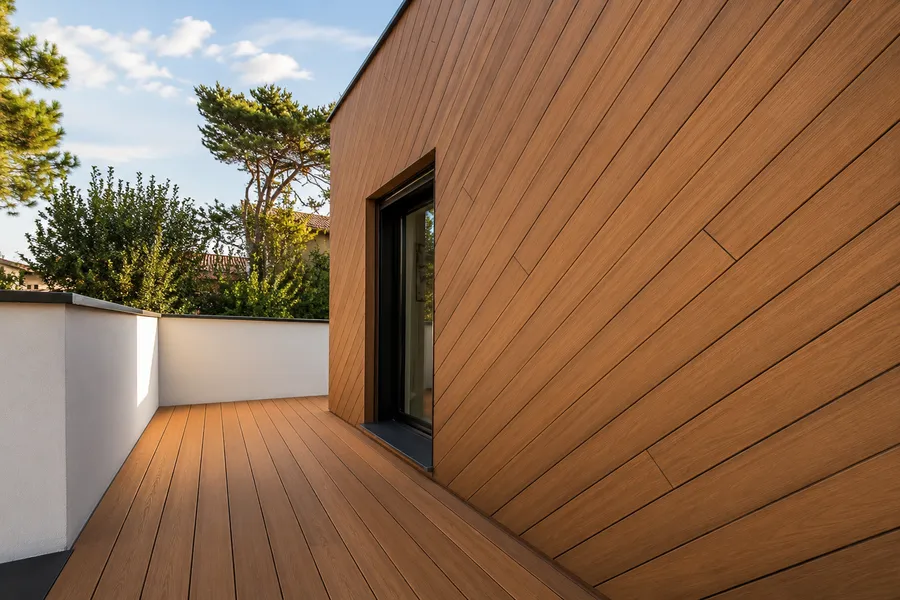
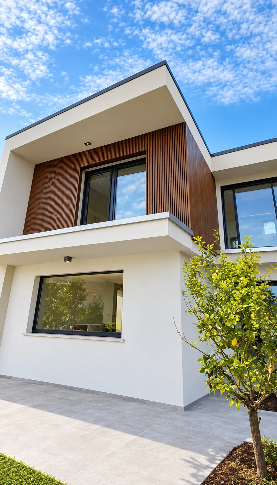
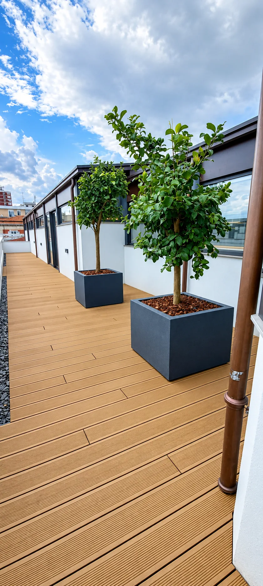
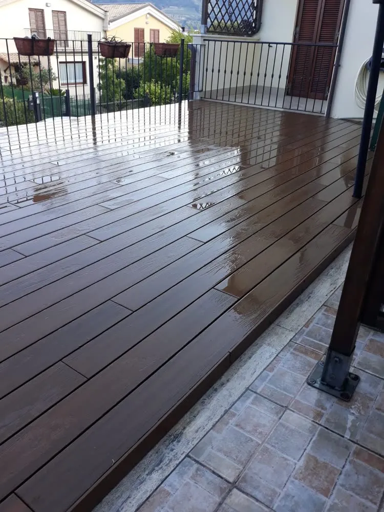
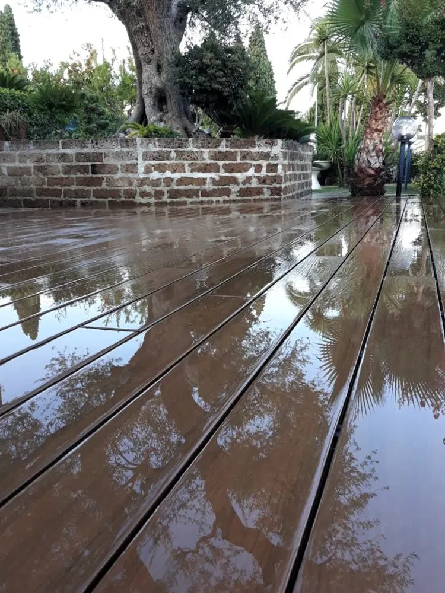

Cos’è il WPC
Il WPC è un composito di fibra di legno e polimeri. Ha la venatura e il calore del legno, ma è fatto per stare fuori: sole, pioggia, salsedine e piedi bagnati a bordo piscina.


Lo posiamo su terrazze, giardini, balconi e bordi piscina, e lo usiamo per rivestire pareti e facciate. Lo stesso materiale passa dal pavimento al muro senza cambiare aspetto.


L’aspetto del legno, con la resistenza di un materiale nato per l’esterno.
Com’è fatta una doga
Quattro ingredienti, ognuno con un compito preciso. Scorri e la doga si compone strato dopo strato.
-
Strato 1
Fibra di legno
La base è legno: fibre e farina di legno, in buona parte di recupero. Danno alla doga il peso, la venatura e una superficie piacevole al tatto.
-
Strato 2
Polimero
Un polimero lega le fibre e le chiude una per una. Per questo il WPC non beve acqua come il legno, non marcisce e non si apre in schegge.
-
Strato 3
Additivi
Piccole quantità di additivi proteggono il colore dai raggi del sole e rendono la superficie poco attaccabile da muffe e insetti.
-
Strato 4
Guscio protettivo
Nelle doghe di nuova generazione un film esterno avvolge tutto il profilo: resiste a macchie e graffi e si pulisce con acqua e un detergente neutro.

Dopo un acquazzone l'acqua resta in superficie: la doga non la assorbe. Le fughe tra le doghe e la sottostruttura in pendenza la lasciano poi defluire.
WPC e legno a confronto
| Aspetto | WPC | Legno naturale |
|---|---|---|
| Manutenzione | Si lava con acqua e un detergente neutro. Niente oli né impregnanti. | Va oliato o impregnato ogni anno, e col tempo carteggiato. |
| Acqua e umidità | Assorbe pochissima acqua: non marcisce e non si gonfia con l'umidità. | Assorbe acqua: negli anni può gonfiarsi, imbarcarsi o marcire. |
| Sole | Il colore è stabilizzato e cambia poco nel tempo. | Senza trattamenti ingrigisce in pochi mesi. |
| A piedi nudi | Superficie antiscivolo e niente schegge, anche a bordo piscina. | Con l'usura può scheggiarsi e da bagnato diventa scivoloso. |
| Materiale | Prodotto in gran parte con legno e plastica di recupero. | Materia prima naturale: la resa dipende molto dalla specie scelta. |
Con il caldo il WPC si dilata.
Quando il sole la scalda, ogni doga si allunga di qualche millimetro. Se è bloccata, si incurva. Per questo la posiamo con una fuga tra una doga e l'altra, fissata con clip che la lasciano lavorare, su una sottostruttura ventilata e in pendenza.
È la parte del lavoro che non si vede, ma decide quanto dura il pavimento.
- Fuga di dilatazioneLo spazio in cui la doga si allunga con il caldo.
- Clip a scomparsaTengono le doghe senza viti a vista e le lasciano lavorare.
- Sottostruttura ventilataL'aria passa sotto e asciuga.
- PendenzaL'acqua che passa dalle fughe scorre via.
I nostri lavori in WPC
Come lo posiamo
-
Sopralluogo e rilievo
Misuriamo, controlliamo il fondo e le pendenze e decidiamo come far defluire l'acqua.
-
Sottostruttura
Montiamo i magatelli con la pendenza e la ventilazione giuste: è quello che fa durare il pavimento.
-
Posa a scomparsa
Fissiamo le doghe con clip nascoste, senza viti a vista, lasciando le fughe per la dilatazione.
-
Collaudo e consegna
Controlliamo ogni fila, ti consegniamo il lavoro finito e ti spieghiamo come pulirlo.